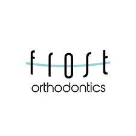

I've been learning how to work with customers by listening to their needs, communicating clearly, and building trust through positive interactions. As I grow in my profession, I’m getting better at promoting the value of what I offer and helping people see how it can benefit them. Each conversation is a chance to improve my sales skills and confidence, and I’m starting to enjoy the challenge of turning interest into real results.
At M&R Services, I gained hands-on experience working as a landscaper and Christmas lights installer. I learned how to manage outdoor projects efficiently, from mowing lawns and trimming bushes to handling seasonal lighting setups with care and precision. The job taught me the value of hard work, attention to detail, and teamwork, especially during busy seasons. Whether it was creating a clean, polished yard or lighting up a home for the holidays, I took pride in delivering quality service that made customers happy.
At Sunny Detailing, I worked as both a car detailer and a sales representative, gaining valuable experience in customer service and vehicle care. I learned how to professionally clean and restore vehicles, paying close attention to every detail to make each car look its best. On the sales side, I helped promote our services, talked with customers to understand their needs, and built trust that led to repeat business. This role taught me how to balance quality work with strong communication and gave me a real sense of pride in representing a business I believe in.
At Frost Orthodontics, I worked as a lab technician, where I gained experience in creating and preparing orthodontic appliances with precision and care. I learned to work with specialized tools and materials, follow detailed instructions, and ensure each appliance met the specific needs of the patient. The role required focus, accuracy, and the ability to work independently while supporting the larger clinical team. It gave me a deeper appreciation for the behind-the-scenes work that contributes to successful patient outcomes.